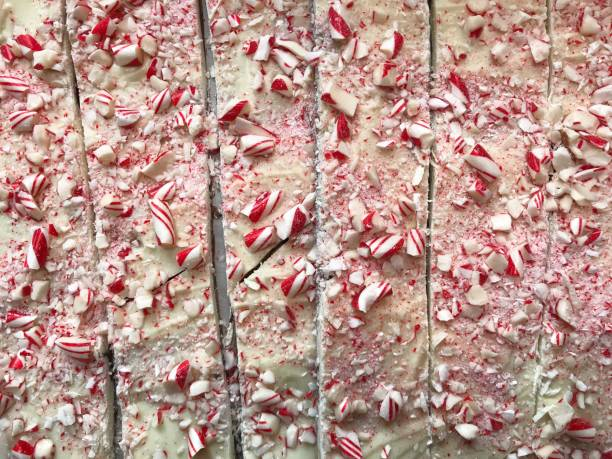

Christmas Peppermint Bark
Description
A delightful layered candy treat made with dark and white chocolate, topped with crushed candy canes for a festive crunch.
Ingredients
- 12 oz dark chocolate chips
- 12 oz white chocolate chips
- 1/2 tsp peppermint extract
- 1/2 cup crushed candy canes
Directions
- Line a 9x13-inch baking pan with parchment paper.
- Melt the dark chocolate chips in a microwave-safe bowl, stirring every 30 seconds until smooth. Stir in 1/4 tsp peppermint extract. Spread evenly in the prepared pan and refrigerate until set (about 15 minutes).
- Melt the white chocolate chips in a microwave-safe bowl, stirring every 30 seconds until smooth. Stir in the remaining 1/4 tsp peppermint extract. Spread over the set dark chocolate layer.
- Sprinkle crushed candy canes on top and gently press them into the white chocolate layer.
- Refrigerate until completely set (about 1 hour). Break into pieces and serve.